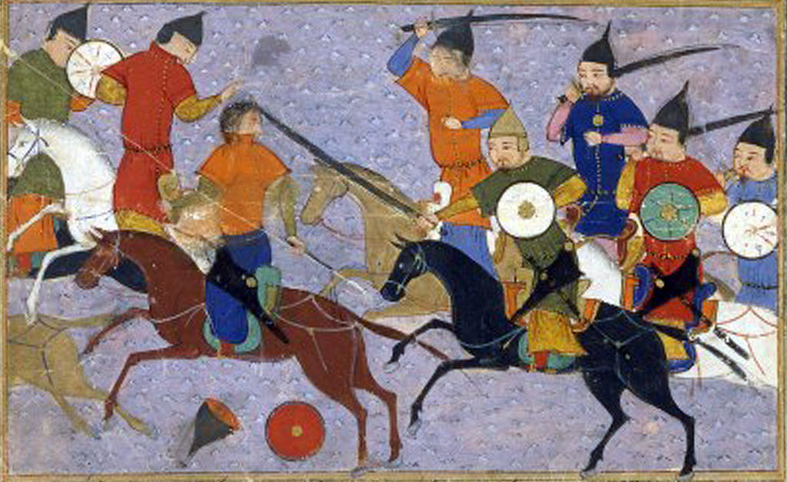

Genghis Khan: A Fearless Conqueror
Genghis Khan lived a long time ago and accomplished many amazing things that still impact the world today. Genghis Khan's empire helped different cultures and ideas mix together. This was really important for trade and learning. People from faraway places could now meet and share their knowledge. The "pony express" system he started also influenced how mail and information were sent across long distances.
So, Genghis Khan wasn't just a tough leader, he was also a person who cared about his people and wanted to make the world better by bringing different parts of it together. His legacy still lives on today!

Short Biography: Genghis Khan
Once upon a time, in the vast and distant land of Mongolia, there lived a legendary leader known as Genghis Khan. Genghis Khan, whose real name was Temüjin, was born around 1162 into a nomadic tribe.
As a young boy, Temüjin faced many challenges, including the loss of his father and the struggles of surviving in the harsh Mongolian wilderness. However, even in the toughest times, he showed incredible bravery and leadership skills.
Temüjin's journey to becoming Genghis Khan began when he united the often-warring Mongol tribes. He believed that together they could be stronger and face any challenges that came their way. With his sharp mind and determination, he earned the respect of his people, and they chose him as their leader.
Genghis Khan was not just a warrior; he was also a wise ruler. He created a set of laws known as the Yassa, which helped maintain order and justice among his people. He valued loyalty, hard work, and courage, and his leadership brought about a time of peace and prosperity in Mongolia.
One of the most incredible things about Genghis Khan was his ability to adapt and learn from different cultures. He encouraged trade, communication, and the exchange of ideas, creating what historians call the "Pax Mongolica" – a period of peace across Asia.
Genghis Khan's legacy extends beyond his lifetime. His descendants, known as the Mongol Empire, went on to conquer vast lands, making it one of the largest empires in history. Genghis Khan's story teaches us the importance of leadership, unity, and the power of embracing diversity.
So, the next time you hear about Genghis Khan, remember the fearless leader who united a nomadic people, created a code of laws, and left an everlasting mark on history.
Timeline
1162 Genghis Khan (Temüjin) was born in Mongolia.
1206 He united the Mongol tribes and became Genghis Khan, their leader.
1215 Genghis Khan's forces captured Beijing, an important city in China.
1227 Genghis Khan passed away, but his empire kept growing after his death.
1260 The Mongol Empire split into four parts, called khanates, ruling different regions.
Late 1200s Marco Polo, a famous traveler, visited the Mongol Empire and wrote about it.

Impact on the World
Genghis Khan's leadership changed the world in many ways. He created one of the biggest empires ever, stretching from Asia to Europe.
Even though he was a strong warrior, he believed in justice and made laws to protect people's rights.
Fun Facts
Genghis Khan was a powerful and legendary leader from a long time ago. He was born in Mongolia around 1162, which is more than 800 years ago!
His real name was Temüjin, but he later became known as Genghis Khan, which means "Universal Ruler." He was really brave and strong, and he led the Mongol people to become a mighty empire.
Reference Books for Elementary Students
When selecting books about Genghis Khan for elementary students, it's important to find age-appropriate materials that present the information in an engaging and accessible manner. Here is a list of recommended books suitable for elementary school readers:
"Genghis Khan (Getting to Know the World's Greatest Conquerors & Commanders)" by Lisa Tucker McElroy
This book provides a simple and informative introduction to Genghis Khan's life and achievements.
"Genghis Khan (First Biographies)" by Lola M. Schaefer
A part of the "First Biographies" series, this book offers young readers an overview of Genghis Khan's life and impact on world history.
"Genghis Khan (History's All-Stars)" by Andrew Santella
This book is part of the "History's All-Stars" series, offering a kid-friendly biography of Genghis Khan with illustrations and interesting facts.
"Who Was Genghis Khan?" by Nico Medina (Who Was? series)
The "Who Was?" series is well-loved for its engaging style and informative content. This book provides a kid-friendly exploration of Genghis Khan's life.
"You Wouldn't Want to Be Genghis Khan!" by Ian Graham
This humorous and informative book is part of the "You Wouldn't Want to Be" series, presenting historical figures in a fun and accessible way for young readers.
"Genghis Khan: 13th-Century Mongolian Tyrant (Wicked History)" by Enid A. Goldberg
This book is part of the "Wicked History" series, which aims to make history come alive for young readers. It provides an engaging look at Genghis Khan's life.
"Genghis Khan (Biography for Kids)" by Baby Professor
Aimed at younger elementary students, this book uses simple language and colorful illustrations to introduce Genghis Khan.
"Genghis Khan and the Making of the Modern World" by Weatherford, Jack
While not specifically written for elementary students, this book provides an in-depth look at Genghis Khan's historical impact. Selected excerpts may be suitable for older elementary students or for reading with adult guidance.
Always check the reading level and content appropriateness to ensure that the books are suitable for the age group you're targeting. Additionally, consider discussing the content with parents or educators to ensure it aligns with the educational goals and sensitivities of the students.